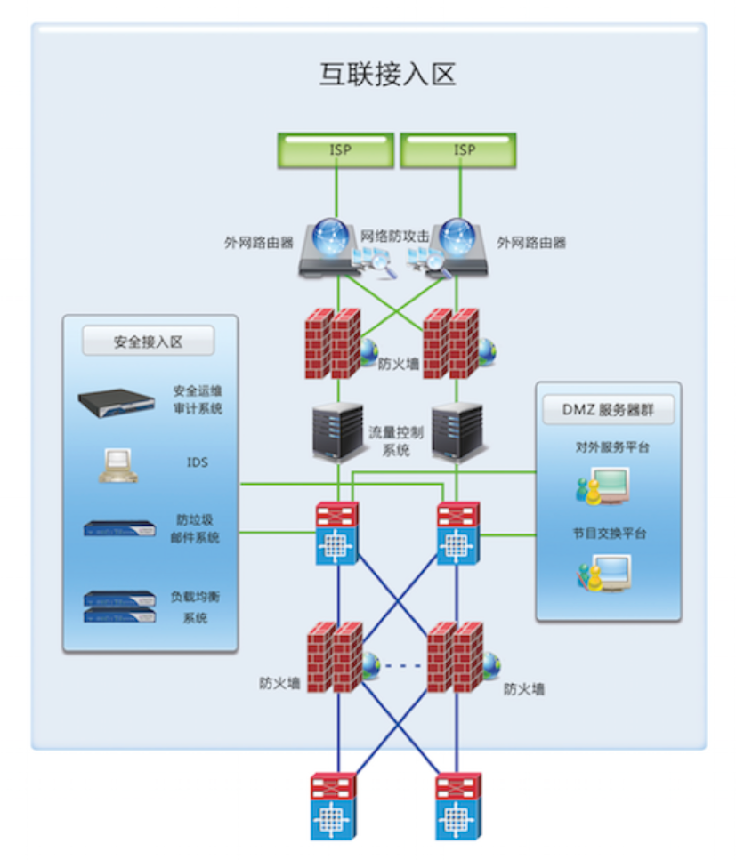

概述 互联网界入区是连接广域网系统和内部局域网系统的区域，需要对通过广域网访问的外部用户、合作伙伴及移动办公内部用户等提供Web、文件和VPN等服务，同时内部用户与广域网的通信需要经由DMZ区域的网络进行互联。  业务安全需求
安全解决方案 根据实际业务需求和安全需求，合理划分安全分区，采用不同的信息安全产品和技术手段，合理管控来自互联网的信息安全风险，进行全面的信息安全防护。 合理划分安全分区，互联网接入分为互联网接入区、DMZ区和安全接入区。其中互联网接入区中部署基础的网络设备和边界安全防护设备；DMZ区部署对外发布业务服务器，包括视音频发布和内容交换系统；安全接入区中部署其他重要的安全设备和产品，并与互联网界入区进行信息安全防护联动。 边界安全防护：通过部署防火墙系统实现互联网接入的安全防护及内部安全域间的逻辑隔离；部署网络防攻击系统对来自互联网的攻击行为进行拦截防护；部署防病毒网关系统，在网络入口处对病毒进行拦截防御；部署入侵检测系统对网络入侵事件进行实时监测。 应用交付：通过部署流量控制系统，为各业务系统预留足够贷款，确保视音频发布等关键业务顺利交付。部署负载均衡系统，提高关键业务的服务性能、安全及高可用性。部署虚拟专用网设备，让员工远程通过VPN访问内部业务系统，防止数据被窃听和篡改。部署防垃圾邮件系统，实现对垃圾邮件的拦截。部署数字证书系统，实现关键业务系统和运维管理业务的双因素认证，确保用户认证和授权安全。 安全审计：通过部署安全审计系统，对互联网接入区的网络设备、安全设备进行日志抓取和审计，确保发生安全事件，第一时间进行定位和追溯的风险。 |
||||
 官方微博
官方微博 官方微信
官方微信
 传统企业网信息安全解决方案
传统企业网信息安全解决方案